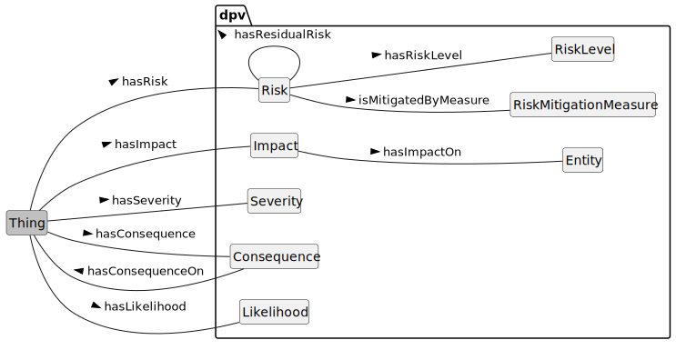

This document provides additional details and examples for risk and impact assessment concepts used in the Data Privacy Vocabulary [[DPV]], and is a companion to the [[DPV]] specification.
Contributing: The DPVCG welcomes participation to improve the DPV and associated resources, including expansion or refinement of concepts, requesting information and applications, and addressing open issues. See contributing guide for further information.
DPV and Related Resources
[[[DPV]]]: is the base/core specification for the 'Data Privacy Vocabulary', which is extended for Personal Data [[PD]], Locations [[LOC]], Risk Management [[RISK]], Technology [[TECH]], and [[AI]]. Specific [[LEGAL]] extensions are also provided which model jurisdiction specific regulations and concepts - see the complete list of extensions. To support understanding and applications of [[DPV]], various guides and resources [[GUIDES]] are provided, including a [[PRIMER]]. A Search Index of all concepts from DPV and extensions is available.
[[DPV]] and related resources are published on GitHub. For a general overview of the Data Protection Vocabularies and Controls Community Group [[DPVCG]], its history, deliverables, and activities - refer to DPVCG Website. For meetings, see the DPVCG calendar.
The peer-reviewed article “Creating A Vocabulary for Data Privacy” presents a historical overview of the DPVCG, and describes the methodology and structure of the DPV along with describing its creation. An open-access version can be accessed here, here, and here. The article preprint Data Privacy Vocabulary (DPV) - Version 2 describes the changes made in DPV v2.
Introduction

For risk and impact assessment, DPV's provides a 'lightweight risk ontology' based on commonly utilised concepts of [=Risk=], [=RiskMitigationMeasure=], [=Consequence=], and [=Impact=] along with risk assessment concepts of [=RiskLevel=], [=Severity=], and [=Likelihood=]. Through these concepts, information about what risks and impacts exist as well as their qualitative and quantitative assessment (severity, level) can be sufficiently expressed.
For a more comprehensive representation of risk assessment, mitigation, and management concepts, the [[[RISK]]] extension should be used which is based on relevant standards such as the ISO/IEC 31000 series. The [[RISK]] extension also provides taxonomies for these concepts which permits representation of information such as different types of consequences and impacts or concepts representing levels, severities, and likelihoods. It also provides representations of risk matrices, modelling incident and associated statuses, and categorises of 'controls' for a clearer application of measures.
dpv:Consequence: The consequence(s) possible or arising from specified context
go to full definition
dpv:ConsequenceAsSideEffect: The consequence(s) possible or arising as a side-effect of specified context
go to full definition
dpv:ConsequenceOfFailure: The consequence(s) possible or arising from failure of specified context
go to full definition
dpv:ConsequenceOfSuccess: The consequence(s) possible or arising from success of specified context
go to full definition
dpv:Impact: The impact(s) possible or arising as a consequence from specified context
go to full definition
dpv:Likelihood: The likelihood or probability or chance of something taking place or occuring
go to full definition
dpv:Risk: A risk or possibility or uncertainty of negative effects, impacts, or consequences
go to full definition
dpv:ResidualRisk: Risk remaining after treatment or mitigation
go to full definition
dpv:RiskAssessment: Assessment involving identification, analysis, and evaluation of risk
go to full definition
dpv:ImpactAssessment: Calculating or determining the likelihood of impact of an existing or proposed process, which can involve risks or detriments.
go to full definition
dpv:DataTransferImpactAssessment: Impact Assessment for conducting data transfers
go to full definition
dpv:RightsImpactAssessment: Impact assessment which involves determining the impact on rights and freedoms
go to full definition
dpv:DataBreachImpactAssessment: Impact Assessment concerning the consequences and impacts of a data breach
go to full definition
dpv:DPIA: Impact assessment determining the potential and actual impact of processing activities on individuals or groups of individuals and taking into account the impacts of activities on their rights and freedoms
go to full definition
dpv:FRIA: Impact assessment which assesses the potential and actual impact on fundamental rights occuring due to processing activities
go to full definition
dpv:SecurityAssessment: Assessment of security intended to identity gaps, vulnerabilities, risks, and effectiveness of controls
go to full definition
dpv:CybersecurityAssessment: Assessment of cybersecurity capabilities in terms of vulnerabilities and effectiveness of controls
go to full definition
dpv:RiskLevel: The magnitude of a risk expressed as an indication to aid in its management
go to full definition
dpv:RiskMitigationMeasure: Measures intended to mitigate, minimise, or prevent risk.
go to full definition
dpv:Severity: The magnitude of being unwanted or having negative effects such as harmful impacts
go to full definition
dpv:SensitivityLevel: Sensitivity' reflects the risk of impact if not secured or utilised with appropriate measures and controls e.g. for sensitive data
go to full definition
Risk
[=Risk=] within the DPV is concerned with 'probable negative effects', and is indicated by using [=hasRisk=]. A risk event is a probable event that may lead to negative consequences and impacts (hence it is a 'risk'). It is important to note that a risk is a hypothetical event i.e. it is a probability that something may occur. The concept `risk:Incident` in [[RISK]] extension represents incidents which have occured and provides the necessary concepts to connect them to risks for what had been previously assessed as well as to indicate what are the further risks associated with an incident.
[=Likelihood=], associated using [=hasLikelihood=], represents the likelihood or probability or chance of something (risk in this case) taking place. The [[RISK]] extension defines concepts to indicate likelihoods with various scales e.g. as a set of 3 concepts representing high likelihood, moderate likelihood, and low likelihood.
[=Severity=], associated using [=hasSeverity=], represents the severity or 'extremeness' or 'intensity' of something (risk in this case). The [[RISK]] extension defines concepts to indicate severities with various scales e.g. as a set of 5 concepts representing very high severity, high severity, moderate severity, low severity, and very low severity. [=SensitivityLevel=] represents the 'sensitivity' of some context (e.g. personal data) as a measure of how severe risks associated with it are (e.g. to indicate how sensitive the personal data is). It is associated using the relation [=hasSensitivityLevel=].
[=RiskLevel=], associated using [=hasRiskLevel=], represents the combination of severity and likelihood in the form of 'risk level' that provides a cohesive qualitative assessment of risk. The [[RISK]] extension defines concepts to indicate risk levels with various scales e.g. as a set of 3 concepts representing high risk, moderate risk, and low risk.
Risk Mitigation Measure
[=RiskMitigationMeasure=] is a measure taken to mitigate the risk. Here the use of the word 'mitigate' follows from its use in legal documents and includes avoiding, reducing, replacing, removing, transforming, sharing, and other operations related to risk treatment. In normative risk related guides and standards, mitigation is only one operation within risk treatment processes.
Risks can have multiple mitigation measures, which are indicated by using [=isMitigatedByMeasure=] relation. A mitigation measure may address multiple risks, which are indicated by using [=mitigatesRisk=]. The [=RISK=] extension provides a more granular taxonomy of risk mitigation measures, including risk controls which enable expressing aspects of the intended effect of a measure on risk (or other events) - e.g. to remove the source or to alter the consequence.
Risk remaining after 'mitigation' or 'treatment' is represented by [=ResidualRisk=], which is a subcategory of [=Risk=] and uses the same relations to express likelihood, severity, level, and further mitigations. It is associated by using [=hasResidualRisk=] and [=isResidualRiskOf=] relations.
Consequence & Impact
The concepts [=Consequence=] and [=Impact=] in DPV are provided with a specific modelling of consequences and impacts. The DPV concept for consequence represents the consequence of an event (e.g. risk or incident), and impact is a specific type of consequence which as significance to an entity. DPV considers effects on technical systems (e.g. service disruption) and minor effects on entities (e.g. delayed process) as consequences from major effects focused on entities (e.g. harms) as impacts. Based on this, we recommend using consequences and impacts in the following manner:
[=Consequence=] to indicate the immediate effect of an event where it is not significant to an entity - this can be disruption of the system or service, or loss of data, or other such events. Most technical events would fall under consequence.
To indicate what the consequence has affected, the relation [=hasConsequenceOn=] is provided. The effect of consequence can be material or non-material, and can be on a system, agent, or legal entity.
[=Impact=] to represent consequences which have a significant effect on one or more `dpv:Entity`. Impacts are associated by using [=hasImpactOn=] relation, and the impact is always on an entity. The significance of impact is associated with how it affects the entity e.g. financial loss, physical or mental harm, or impact on rights.
The entity being affected by the impact is indicated by using [=hasImpactOn=].
The consequences and impacts can reuse the risk assessment properties to describe likelihood and severity. Consequences and impacts can also be chained together e.g. to describe a consequence (service diruption) leads to another consequence (wasted time) which leads to an impact (financial loss). Consequences and impacts can be hypothetical (i.e. risks) or actual (i.e. incidents).
Consequences and impacts can be positive (e.g. benefit) or negative (e.g. harm). The relations associating them with entities or systems should be interpreted accordingly. For example, if the impact is a harm - which is negative, then the impacted entity should be understood as being the one that is harmed. If instead the impact is compensation - which is positive, then the impacted entity should be understood as being the one that is compensated.
The [[RISK]] extension provides a taxonomy of consequences and impacts which covers commonly utilised terms such as harm, data breach, equipment failure, financial loss, and malware attack. It also provides a taxonomy of positive consequences and impacts which are not 'risks', such as benefits, renumerations, and compensation.
Risk and Impact Assessments
To support assessments associated with risks and impacts, DPV provides the following concepts:
[=RiskAssessment=] regarding risk assessments.
[=SecurityAssessment=] regarding assessment of security, and [=CybersecurityAssessment=] as assessment of cybersecurity.
[=ImpactAssessment=] to impact assessments, with [=PIA=] representing Privacy Impact Assessments (PIA) and [=DataTransferImpactAssessment=] for assessment of impacts in data transfer.
[=RightsImpactAssessment=] as a specific impact assessment that involves assessing impact on rights, with [=DPIA=] representing Data Protection Impact Assessment (DPIA) and [=FRIA=] representing Fundamental Rights Impact Assessment (FRIA).
[=DataBreachImpactAssessment=] represents assessment of data breaches and is defined as a rights impact assessment as at least privacy (for personal data) or commercial rights (for non-personal data) will need to be assessed in a data breach.
The relations [=hasRiskAssessment=] and [=hasImpactAssessment=] enable associating a risk and impact assessment with a process, service, or other contexts. There can be multiple assessments associated with the same context, e.g. for covering different topics or representing assessments at different stages or temporal periods. Assessments can indicate their 'subjects' and other metadata by using a relevant vocabulary such as [[[DCT]]]. Assessments can also record dates associated with their use to audit a system or process, and the relevant status to record the outcome of that process e.g. to indicate approval.
Impact assessment determining the potential and actual impact of processing activities on individuals or groups of individuals and taking into account the impacts of activities on their rights and freedoms
Usage Note
Specific requirements and procedures for DPIA are defined in GDPR Art.35
Impact assessment which assesses the potential and actual impact on fundamental rights occuring due to processing activities
Usage Note
The fundamental rights and freedoms may be those defined in law or other norms, and may be bound to a jurisdiction - for example see EU Charter of Fundamental Rights
The likelihood or probability or chance of something taking place or occuring
Usage Note
Likelihood can be expressed in a subjective manner, such as 'Unlikely', or in a quantitative manner such as "Twice in a Day" (frequency per period). The suggestion is to use quantitative values, or to associate them with subjective terms used so as to enable accurate interpretations and interoperability. See the concepts related to Frequency and Duration for possible uses as a combination to express Likelihood.
The magnitude of a risk expressed as an indication to aid in its management
Usage Note
Risk Levels can be defined as a combination of different characteristics. For example, ISO 31073:2022 defines it as a combination of consequences and their likelihood. Another example would be the Risk Matrix where Risk Level is defined as a combination of Likelihood and Severity associated with the Risk.
Sensitivity' reflects the risk of impact if not secured or utilised with appropriate measures and controls e.g. for sensitive data
Usage Note
ISO/IEC TS 38505-3:2021 defines 'data sensitivity' as the potential harm of unauthorised disclosure. DPV's use of the concept goes beyond disclosure as it refers to the level of safeguards or controls the data requires as a reflection of its 'sensitive' nature. To indicate quantified levels of sensitivity, e.g. "high sensitivity", instances of severity can be directly used or specialised
DPV uses the following terms from [[RDF]] and [[RDFS]] with their defined meanings:
rdf:type to denote a concept is an instance of another concept
rdfs:Class to denote a concept is a Class or a category
rdfs:subClassOf to specify the concept is a subclass (subtype, sub-category, subset) of another concept
rdf:Property to denote a concept is a property or a relation
The following external concepts are re-used within DPV:
External
Contributors
The following people have contributed to this vocabulary. The names are ordered alphabetically. The affiliations are informative do not represent formal endorsements. Affiliations may be outdated. The list is generated automatically from the contributors listed for defined concepts.
Arthit Suriyawongkul (ADAPT Centre, Trinity College Dublin)
Axel Polleres (Vienna University of Economics and Business)
Beatriz Esteves (IDLab, IMEC, Ghent University)
Bud Bruegger (Unabhängige Landeszentrum für Datenschutz Schleswig-Holstein)
Damien Desfontaines ()
David Hickey (Dublin City University)
Delaram Golpayegani (ADAPT Centre, Trinity College Dublin)
Elmar Kiesling (Vienna University of Technology)
Fajar Ekaputra (Vienna University of Technology)
Georg P. Krog (Signatu AS)
Harshvardhan J. Pandit (ADAPT Centre, Dublin City University)
Javier Fernández (Vienna University of Economics and Business)
Julian Flake (University of Koblenz)
Mark Lizar (OpenConsent/Kantara Initiative)
Maya Borges ()
Paul Ryan (Uniphar PLC)
Piero Bonatti (Università di Napoli Federico II)
Rana Saniei (Universidad Politécnica de Madrid)
Rob Brennan (University College Dublin)
Rudy Jacob (Proximus)
Simon Steyskal (Siemens)
Steve Hickman ()
Funding Acknowledgements
Funding Sponsors
The DPVCG was established as part of the SPECIAL H2020 Project, which received funding from the European Union’s Horizon 2020 research and innovation programme under grant agreement No. 731601 from 2017 to 2019.
Harshvardhan J. Pandit was funded to work on DPV from 2020 to 2022 by the Irish Research Council's Government of Ireland Postdoctoral Fellowship Grant#GOIPD/2020/790.
The ADAPT SFI Centre for Digital Media Technology is funded by Science Foundation Ireland through the SFI Research Centres Programme and is co-funded under the European Regional Development Fund (ERDF) through Grant#13/RC/2106 (2018 to 2020) and Grant#13/RC/2106_P2 (2021 onwards).
Funding Acknowledgements for Contributors
The contributions of Harshvardhan J. Pandit have been made with the financial support of Science Foundation Ireland under Grant Agreement No. 13/RC/2106_P2 at the ADAPT SFI Research Centre.